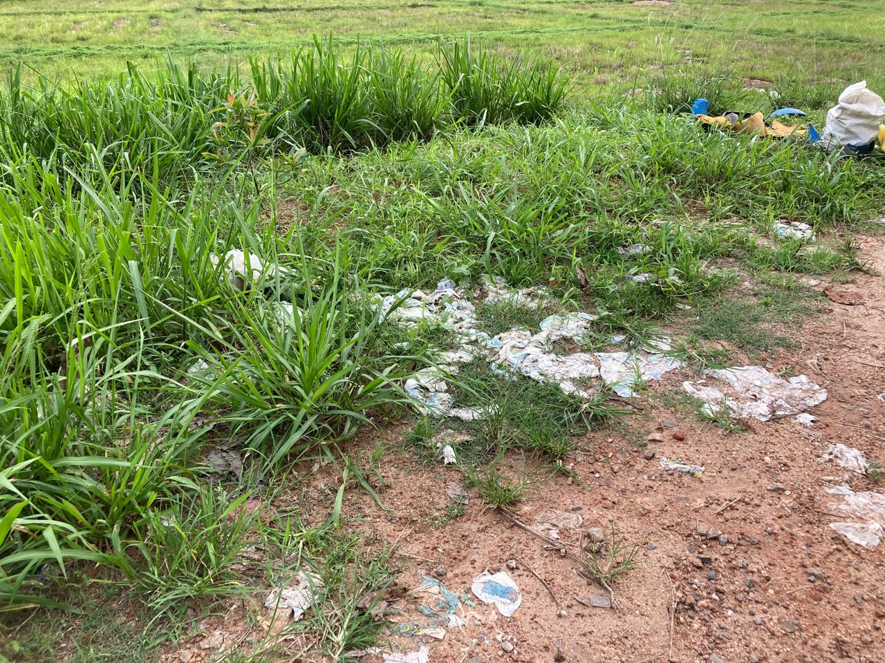

Land Pollution
what is land pollution

Land pollution refers to the deterioration of the earth's land surfaces at and below ground level. It is caused by the accumulation of solid and liquid waste materials that contaminate groundwater and soil.
what is the main cause of land pollution
- Improper Waste Disposal: One of the leading causes of land pollution is the improper disposal of waste materials. This includes dumping of municipal solid waste, industrial waste, construction and demolition debris, and hazardous waste onto landfills or open spaces.
- Industrial Activities: Industries generate large amounts of waste products, including chemicals, heavy metals, solvents, and toxins. Improper disposal of industrial waste onto land can contaminate soil and groundwater, leading to land pollution.
- Agricultural Practices: Agricultural activities contribute significantly to land pollution through the use of chemical fertilizers, pesticides, and herbicides. These chemicals can accumulate in the soil, leading to soil contamination and degradation.
- Oil and Chemical Spills: Accidental spills of oil, gasoline, chemicals, and hazardous substances onto land can contaminate soil and groundwater, causing land pollution and environmental damage.
- Illegal Dumping: Illegal dumping of waste materials onto vacant lands, rivers, and open spaces contributes to land pollution. This includes dumping of household waste, industrial waste, and construction debris.
- Plastic Pollution: Improper disposal of plastic waste leads to littering and accumulation of plastics on land, causing visual pollution and posing risks to wildlife and ecosystems.
- Mining Operations: Mining activities generate large volumes of waste materials, including tailings, slag, and mine drainage. These waste materials can contaminate soil and water resources, leading to land pollution and ecosystem destruction.
how does land pollution affect us
Human Health:
- Contaminated Soil: Exposure to contaminated soil can lead to health problems such as skin irritations, rashes, and infections. Chemicals and toxins present in polluted soil can be absorbed through the skin, leading to acute or chronic health issues.
- Airborne Pollutants: Landfills and polluted sites emit gases such as methane and volatile organic compounds (VOCs) into the air. Breathing in these pollutants can cause respiratory problems, allergies, and other respiratory illnesses.
- Water Contamination: Land pollution can lead to groundwater contamination, affecting drinking water sources. Consuming contaminated water can cause waterborne diseases, gastrointestinal issues, and long-term health problems.
- Food Chain Contamination: Pollutants in the soil can be absorbed by plants, entering the food chain. Consuming contaminated food can lead to exposure to heavy metals, pesticides, and other toxins, posing health risks to humans.
- Respiratory Illnesses: Inhalation of dust particles and pollutants from landfills, construction sites, and polluted areas can lead to respiratory problems such as asthma, bronchitis, and lung cancer.
Environmental Impact:
- Soil Degradation: Land pollution leads to soil degradation, reducing soil fertility, nutrients, and organic matter. Degraded soil cannot support plant growth, affecting agriculture and food production.
- Loss of Biodiversity: Land pollution destroys habitats for plants and animals, leading to loss of biodiversity and disruption of ecosystems. Endangered species may lose their natural habitats and become extinct.
- Water Pollution: Pollutants from landfills, industrial sites, and agricultural areas can leach into groundwater, contaminating drinking water sources and aquatic ecosystems. Water pollution leads to fish kills, algal blooms, and degradation of aquatic habitats.
- Air Pollution: Landfills and polluted areas emit gases and odors into the air, contributing to air pollution. This can lead to smog, respiratory problems, and other health issues.
- Climate Change: Land pollution contributes to climate change through the release of greenhouse gases such as methane from landfills and polluted sites. Climate change affects weather patterns, ecosystems, and human health.
How to reduce land pollution
- Proper waste disposal: Dispose of household waste, including hazardous materials like batteries, electronics, and chemicals, at designated collection centers to prevent them from contaminating the soil and groundwater.
- Reduce, reuse, and recycle: Minimize waste production by reducing consumption, reusing items, and recycling materials to decrease the amount of waste that ends up in landfills.
- Composting: Convert organic waste, such as food scraps and yard waste, into compost, which can be used as a natural fertilizer for plants. This practice reduces the amount of waste sent to landfills and helps maintain soil health.
- Support sustainable packaging: Opt for products with minimal packaging or packaging made from recycled materials. Encourage companies to adopt eco-friendly packaging practices.
- Limit pesticide and chemical use: Apply pesticides and chemicals only when necessary, and follow recommended guidelines to prevent excessive runoff into the soil and water bodies.
- Choose environmentally friendly transportation: Opt for public transport, carpooling, cycling, or walking instead of relying on individual vehicles to reduce pollution from vehicle emissions and the need for more roads and parking lots.
- Implement sustainable land use practices: Support and promote land management techniques that minimize soil degradation, such as conservation agriculture, agroforestry, and reforestation.